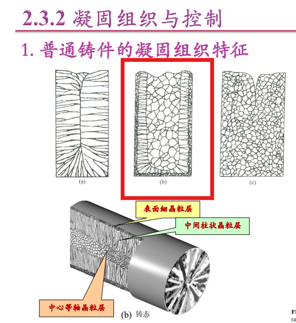
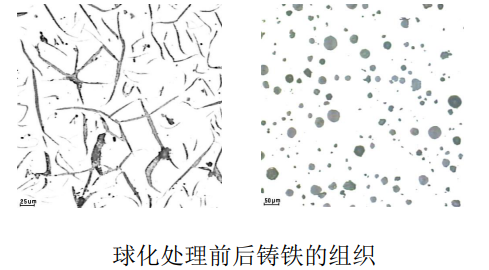
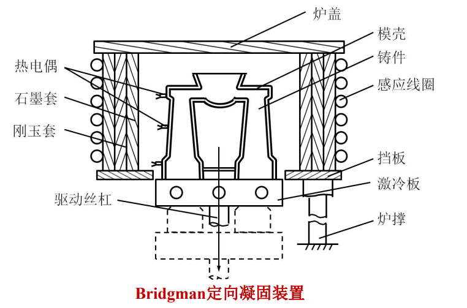
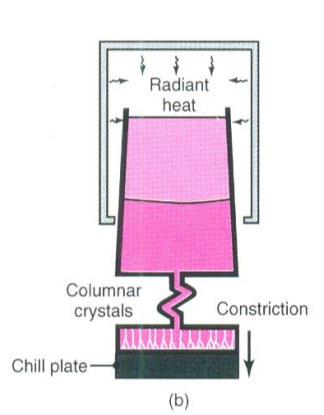
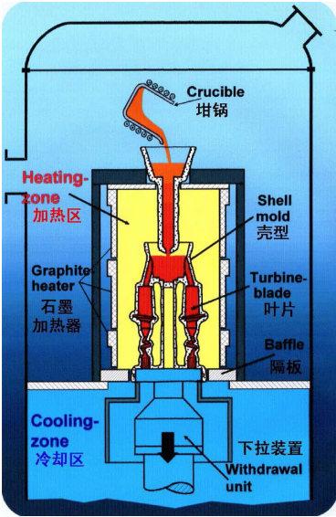
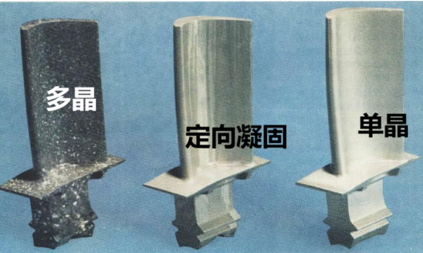
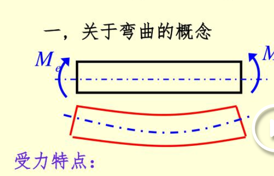

平衡凝固与紧平衡凝固的溶质分布
理想：平衡凝固
界面：固液两相的交界处
近平衡：界面上的成分还按平衡来走
Scheil方程（条件：固态没有扩散）
随着温度降低，固相的溶质跑到液相（可能形成共晶）
逐渐的凝固组织

逐渐的凝固组织
最外边：极冷：过冷度很大——细晶
中间：散热方向方向呢延长，长条状
形核（大）：散热
竖状晶，等轴晶
- 通过改变温度梯度大小，可以得到不同的偏好
细化处理
细化处理：非铁合金
孕育处理：铸铁
细化&孕育：钢
形核剂——形核基地
要求：让凝固的部分容易在其上生长，界面能低（界面张力小）结合能大
形核剂例子：
形核条件：结构，浓度，能量
可以加入生核剂
影响长大
影响长大：机械振动、外加磁场、化学添加剂
金属：粗糙界面
非金属（硅）：
改变生长方式
球化处理
球化处理（避免"片状"，球化结构强度更强）

球化
定向柱状晶
形成条件：单向热流，足够高的温度梯度，杜绝外来结晶核心
注：晶体沿热流方向反向生长
例子：Bridgman定向凝固（炉外法）
炉外温度低，炉内温度高

炉外法
单晶（单晶叶片）
选晶器：让只有一个条件
其他条件：如上
例子：

选晶器

单晶_完整装置

比较
2.4 主要缺陷&产生原因
2.4.1 充型不足
冷隔：两个凝固液挨在一起，但是结合能力弱
2.4.2 收缩类（缩孔，缩松）
特例：石墨膨胀抵消部分收缩
因素：化学成分，浇注温度，铸型结构&条件（形成阻碍）
模子要比铸件大，留出收缩空间（合适收缩率）
减小收缩&增加补缩
（待补充）缩孔？缩松？？
补缩："顺序凝固原则" 从最远处——中间——冒口
"同时凝固"：特指没有办法达到顺序凝固
条件：
- 壁厚均匀的薄壁铸件
- 采用"顺序凝固"——产生热裂，变形（温度不均，热应力大）
调节方式：用冒口来慢，冷铁来加快
2.4.3 应力缺陷（变形——形状改变，热裂，冷裂）
热应力：收缩不均匀
相变应力：相变不同步
Ex. 奥氏体（小，密排）——铁素体（大）
收缩应力（过程中）
考虑铸型(Mold)在里边给予支撑，拿出来后缺乏了支持力，仍旧有形变
裂开与否：
减小应力方式
人工时效：热效应（淬火？？？，待确定）
铸型变形：挠曲应变
长的受压；短的受拉
快速冷却的，先建立刚度（硬的），带动慢速冷却的（软的）收缩，慢速冷却的之后在冷却收缩，所以更小了；小结：冷却快的长，冷却慢的短
另外，还有残余拉应力，导致部分缩短

挠曲应变
解决方式：增加内应力etc.
2.4.4 界面缺陷（气孔，夹杂物）
严重缺陷（不允许存在）
外裂纹：
内裂纹：
热裂————沿晶断裂
热裂：凝固末期（铸件已经可以处理了，但仍旧存在液态的晶界，液态承受不了应力，所以最后就沿晶裂开）
对于合金：粗大树枝晶，易裂
铸型方面：应力大，易开裂
铸型结构不合理（截面直角相交）
防止措施：细晶，减少杂质&拘束
冷裂————穿晶断裂
冷裂：较低温下形成
原因：受拉伸的部分（应力大小和性能），应力超过性能
影响因素：应力增大，强度塑形降低
措施：减小应力（不超过性能）
2.4.4 成分偏析&夹杂物缺陷
枝晶偏析（同一个晶体，如：同一个枝晶里不同树枝的冷却快慢不同，成分也不同）
晶界偏析（两个枝晶的截面）
影响偏析速度
太慢，太快，偏析=小！
偏析程度(S_e)，偏析比（S_R）：用来表示偏析大小
影响因子
- 扩撒能力低的溶质元素（容易偏析）
- 合金晕啊素的影响（含碳量大，偏析程度大）
铸造合金中的气体
- 析出性气孔（溶解度：固体<气体，原先溶解在液体金属的流失到空气中）
- 反应性气孔（化学反应，生成CO,不溶于金属）
- 侵入性气孔（充型过程中充进去的）
夹杂物
夹杂物：不同于几题金属的质点
各种分类（熔点，大小，分布，形状）
来源！比较关键：
- 内生（脱氧O，脱硫S）（溶解的S,0，形成过饱和）
- 外来（熔炼的耐火材料，浇注时的材料，"掉进去"）
金属类铸型作用类的缺陷——粘砂
粘砂
- 机械（钻入空隙）
- 化学（被氧化FeO-SiO2，焊接起来了，同时和金属和沙子连接起来）